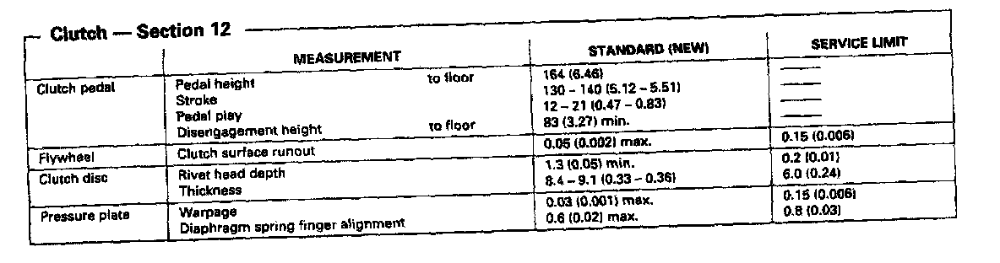
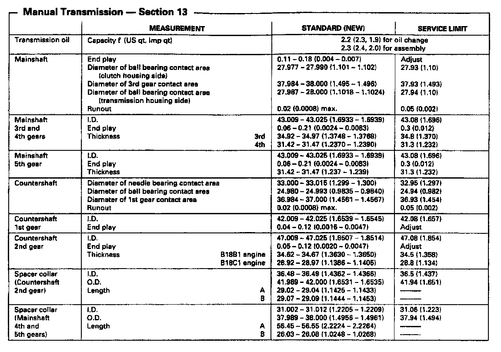
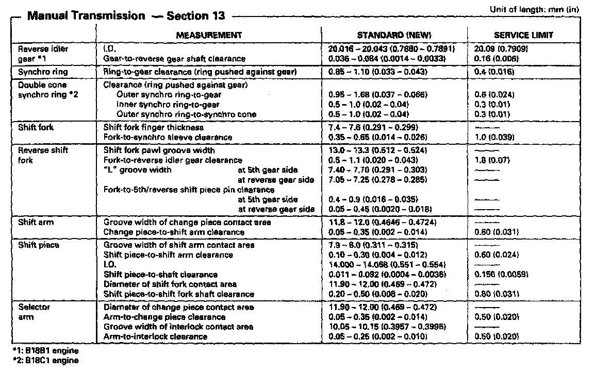
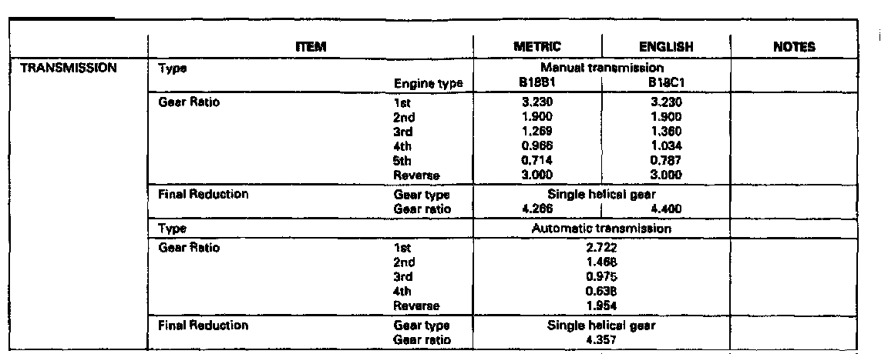

Y80 5-SPD M/T
Y80 5-spd M/T, Clutch Measurements:

Y80 5-spd M/T, Mainshaft/Countershaft Measurements:

Y80 5-spd M/T, Synchro Rings, Shift Fork & Selector Arm:

Manual/Automatic Transmission Gear Ratios:

Manual/Automatic Transmission Gear Ratios:
